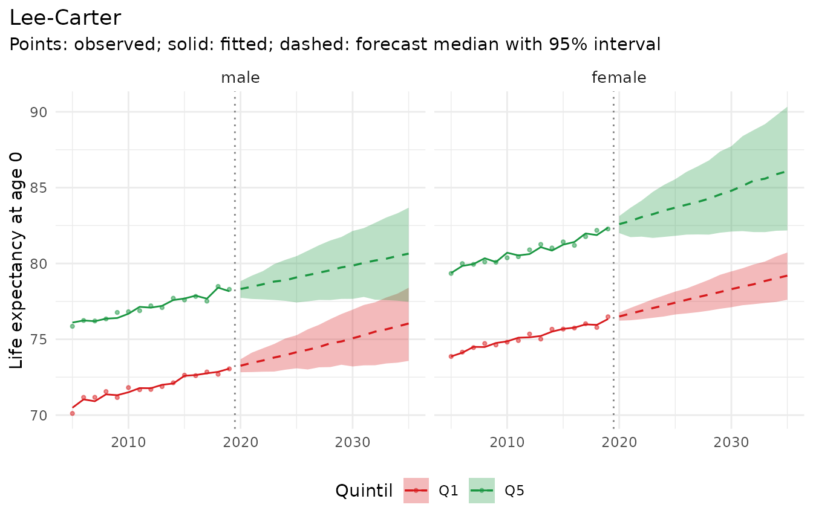

This vignette goes from files as a statistical office publishes them
to a report with forecasts, observed indicators and inequality measures.
The files are simulated, with the peculiarities of real exports: German
column names and age labels, sexes coded 1 and 2, small counts
suppressed as ".", zeros written as "-", rows
with totals over all ages, and populations on 31 December.
The files
The code below writes two CSV files (semicolon-separated, as in many European exports). With your own data, you start from your files.
set.seed(42)
ages <- c("unter 1 Jahr", "1 bis unter 5 Jahre", paste(seq(5, 85, 5), "bis unter", seq(10, 90, 5), "Jahre"),
"90 Jahre und mehr")
lo <- c(0, 1, seq(5, 90, 5))
g <- CJ(Jahr = 2005:2022, Geschlecht = 1:2, Quintil = 1:5, k = seq_along(ages))
g[, Altersgruppe := ages[k]]
g[, bev := round(4e4 * exp(-lo[k] / 45) * (1 + 0.1 * (Quintil == 1)))]
g[, rate := exp(-10.1 + 0.09 * (lo[k] + 2) + 0.3 * (Geschlecht == 1) + 0.12 * (5 - Quintil) - 0.015 * (Jahr - 2005))]
g[k == 1, rate := 0.004]
g[Jahr %in% 2020:2022, rate := rate * 1.12] # pandemic years
g[, Gestorbene := rpois(.N, bev * pmin(rate, 0.7))]
deaths <- g[, .(Jahr, Geschlecht, Quintil, Altersgruppe,
Gestorbene = ifelse(Gestorbene == 0, "-", ifelse(Gestorbene < 3, ".", Gestorbene)))]
totals <- g[, .(Altersgruppe = "Insgesamt", Gestorbene = as.character(sum(Gestorbene))),
by = .(Jahr, Geschlecht, Quintil)]
deaths <- rbind(deaths, totals)
pop <- g[, .(Stichtag = Jahr, Geschlecht, Quintil, Altersgruppe, Bevoelkerung = bev)]
pop <- rbind(pop[Stichtag == 2005][, Stichtag := 2004], pop) # 31 December of the year before
f_deaths <- file.path(tempdir(), "gestorbene.csv")
f_pop <- file.path(tempdir(), "bevoelkerung.csv")
fwrite(deaths, f_deaths, sep = ";")
fwrite(pop, f_pop, sep = ";")Reading
read.csv2() reads semicolon-separated files; reading
every column as text keeps symbols such as "." intact.
mt_data() then gets the names of the columns: stratum
variables (by), age, period and the value of each
table.
d <- read.csv2(f_deaths, colClasses = "character")
p <- read.csv2(f_pop, colClasses = "character")
head(d)
#> Jahr Geschlecht Quintil Altersgruppe Gestorbene
#> 1 2005 1 1 unter 1 Jahr 194
#> 2 2005 1 1 1 bis unter 5 Jahre 4
#> 3 2005 1 1 5 bis unter 10 Jahre 9
#> 4 2005 1 1 10 bis unter 15 Jahre 10
#> 5 2005 1 1 15 bis unter 20 Jahre 13
#> 6 2005 1 1 20 bis unter 25 Jahre 13The population table names the year Stichtag, so it is
added with mt_add_population() and its own column
names:
x <- mt_data(deaths = d, by = c("Geschlecht", "Quintil"), age = "Altersgruppe", period = "Jahr",
value = "Gestorbene")
#> Warning in ingest_obs(x, by, age, period, value, measure, age_open, missing =
#> missing, : 180 row(s) of the deaths table with age or period labelled as a
#> total ("Insgesamt") are left out.
#> Warning in ingest_obs(x, by, age, period, value, measure, age_open, missing =
#> missing, : 142 missing deaths value(s) left out; suppressed counts can be
#> estimated with mt_fill_suppressed().
x <- mt_add_population(x, p, age = "Altersgruppe", period = "Stichtag", value = "Bevoelkerung")
x
#> <mt_data> 10 strata by Geschlecht, Quintil, omega = 110
#> deaths mixed widths (1,4,5) 0-89, 90+; periods 2005-2022 (width 1); 3458 cells
#> population mixed widths (1,4,5) 0-89, 90+; periods 2004-2022 (width 1); 3800 cells
#> grid <mt_axis: age, 20 intervals> 0 1-4 5-9 10-14 ... 80-84 85-89 90+
#> <mt_axis: period, 19 intervals> 2004 2005 2006 2007 ... 2020 2021 2022The warnings report what mt_data() did with the
peculiarities: rows labelled "Insgesamt" (totals over all
ages) are left out, "-" is read as zero and the suppressed
cells (".") as missing.
Preparing
Each step is a decision; the functions make it explicit.
x <- mt_relabel(x, "Geschlecht", c("1" = "male", "2" = "female"))
x <- mt_relabel(x, "Quintil", c("1" = "Q1", "2" = "Q2", "3" = "Q3", "4" = "Q4", "5" = "Q5"))
x <- mt_as_exposure(x, type = "dec31") # populations on 31 December
mt_validate(x)
#> <mt_validation> 1 finding(s): 0 error, 0 warning, 1 info
#> [info] grid coverage (deaths, all, n = 142): grid cells not covered by observationsWithout published totals, suppressed counts are estimated within the range that the suppression rule implies (here 1 or 2 deaths), as expected deaths at the pooled rate of the age group and year:
x <- mt_fill_suppressed(x, lower = 1, upper = 2)
attr(x, "fill")
#> filled missing inconsistent iterations max_gap
#> <int> <int> <int> <int> <num>
#> 1: 142 0 0 0 0The pandemic years 2020-2022 are left out of the fitting period:
The past: observed indicators
Life expectancy, age-standardised rates and the gap between quintiles are computed from the observed rates; the intervals reflect Poisson variation of the death counts.
e0 <- life_expectancy(x)
e0[period == 2019, .(Geschlecht, Quintil, q0.025, q0.5, q0.975)]
#> Geschlecht Quintil q0.025 q0.5 q0.975
#> <char> <char> <num> <num> <num>
#> 1: male Q1 72.54543 73.04539 73.51449
#> 2: male Q2 74.09485 74.56581 75.04868
#> 3: male Q3 74.85565 75.37452 75.93295
#> 4: male Q4 76.61382 77.15026 77.65594
#> 5: male Q5 77.76514 78.29824 78.77255
#> 6: female Q1 76.02923 76.48933 76.95673
#> 7: female Q2 77.32803 77.79383 78.30203
#> 8: female Q3 79.20649 79.72020 80.29379
#> 9: female Q4 79.45129 80.06467 80.59933
#> 10: female Q5 81.76054 82.30710 82.86119
gap <- mt_contrast(x, var = "Quintil", ref = "Q5")
gap[period == 2019 & level == "Q1"]
#> Geschlecht level ref period mean q0.025 q0.5 q0.975
#> <char> <char> <char> <num> <num> <num> <num> <num>
#> 1: male Q1 Q5 2019 -5.256117 -5.983747 -5.245298 -4.533949
#> 2: female Q1 Q5 2019 -5.808297 -6.503961 -5.804167 -5.091491
#> p_positive quantity type
#> <num> <char> <char>
#> 1: 0 life_expectancy difference
#> 2: 0 life_expectancy difference
mt_inequality(x, "Quintil", order = paste0("Q", 5:1), quantity = "life_expectancy")[period == 2019]
#> Geschlecht index period mean q0.025 q0.5 q0.975
#> <char> <char> <num> <num> <num> <num> <num>
#> 1: male sii 2019 -6.6178416 -7.4097300 -6.6029343 -5.7903053
#> 2: male rii 2019 0.9161847 0.9065701 0.9163918 0.9263074
#> 3: female sii 2019 -7.0098431 -7.7955650 -7.0266418 -6.1376267
#> 4: female rii 2019 0.9152828 0.9062260 0.9150688 0.9253027
#> quantity
#> <char>
#> 1: life_expectancy
#> 2: life_expectancy
#> 3: life_expectancy
#> 4: life_expectancyChoosing a model
Three candidates are compared in a backtest with three forecast origins and five years ahead: Lee-Carter per stratum; Li-Lee with a common trend per sex, which keeps the quintiles from diverging; and an ensemble of Lee-Carter and random walks that are robust to small counts.
specs <- list(lee_carter(), li_lee(common_by = "Geschlecht"),
ensemble(lc = lee_carter(), rw = rwd(observation_noise = TRUE)))
bt <- rbindlist(lapply(specs, function(sp) mt_backtest(sp, x, origins = 2012:2014, h = 5, n_draws = 200)))
#> Warning in check_draws_plausible(arr, fit$age, fit$strata, spec$label):
#> Lee-Carter: forecast death rates above 1 in 22.0% of the draws (strata
#> female.Q3; ages 10-14). The model is unstable here, often because of sparse
#> counts or a steep trend extrapolated far ahead; consider wider age groups
#> (mt_regroup()), pooling (li_lee(common_by = )), smoothing (step_smooth()) or an
#> ensemble.
#> Warning in check_draws_plausible(arr, fit$age, fit$strata, spec$label):
#> Lee-Carter: forecast death rates above 1 in 4.5% of the draws (strata
#> female.Q3; ages 10-14). The model is unstable here, often because of sparse
#> counts or a steep trend extrapolated far ahead; consider wider age groups
#> (mt_regroup()), pooling (li_lee(common_by = )), smoothing (step_smooth()) or an
#> ensemble.
#> Warning in check_draws_plausible(arr, fit$age, fit$strata, spec$label):
#> Lee-Carter: forecast death rates above 1 in 22.0% of the draws (strata
#> female.Q3; ages 10-14). The model is unstable here, often because of sparse
#> counts or a steep trend extrapolated far ahead; consider wider age groups
#> (mt_regroup()), pooling (li_lee(common_by = )), smoothing (step_smooth()) or an
#> ensemble.
#> Warning in check_draws_plausible(arr, fit$age, fit$strata, spec$label):
#> Lee-Carter: forecast death rates above 1 in 4.5% of the draws (strata
#> female.Q3; ages 10-14). The model is unstable here, often because of sparse
#> counts or a steep trend extrapolated far ahead; consider wider age groups
#> (mt_regroup()), pooling (li_lee(common_by = )), smoothing (step_smooth()) or an
#> ensemble.
scores <- mt_score(bt)
scores[, .(model, crps, cov95)]
#> model crps cov95
#> <char> <num> <num>
#> 1: Lee-Carter 0.1468536 0.9210618
#> 2: Li-Lee (common by Geschlecht) 0.1666150 0.8976598
#> 3: Ensemble (lc, rw) 0.1499292 0.9364303Warnings about implausible rates in some backtest fits point to young age groups with few deaths. The model with the lowest CRPS is used for the forecast:
Forecasting
fit <- mt_fit(best, x)
summary(fit)
#> Lee-Carter
#> data: 10 strata; ages 0 to 90+; periods 2005-2019
#> model and uncertainty:
#> log m(x,t) = a(x) + b(x) k(t), estimated by Poisson maximum likelihood
#> (Brouhns et al. 2002; Lee and Carter 1992). k(t) follows a random walk with
#> drift; draws include its innovations and the uncertainty of the drift. a(x)
#> and b(x) are fixed (parameter uncertainty with bootstrapped()). Jump-off:
#> fitted rates.
#> fit: Poisson deviance 2444.4 on 3000 cells (0.81 per cell); 2.8% of deviance residuals beyond +/-2
fc <- mt_forecast(fit, to = 2035, n_draws = 500, seed = 1)
e0_fc <- life_expectancy(fc)
e0_fc[period == 2035, .(Geschlecht, Quintil, q0.025, q0.5, q0.975)]
#> Geschlecht Quintil q0.025 q0.5 q0.975
#> <char> <char> <num> <num> <num>
#> 1: male Q1 73.57374 76.03999 78.39900
#> 2: male Q2 74.60033 77.18183 80.10067
#> 3: male Q3 75.40007 77.73687 80.69338
#> 4: male Q4 76.87715 79.84113 83.15670
#> 5: male Q5 77.47300 80.64732 83.67783
#> 6: female Q1 77.60533 79.19567 80.72109
#> 7: female Q2 78.11247 80.55551 83.13545
#> 8: female Q3 77.51242 83.08963 90.00569
#> 9: female Q4 78.87688 82.59816 87.23809
#> 10: female Q5 82.17562 86.08796 90.33716
mt_contrast(fc, var = "Quintil", ref = "Q5")[period == 2035 & level == "Q1"]
#> Geschlecht level ref period mean q0.025 q0.5 q0.975
#> <char> <char> <char> <num> <num> <num> <num> <num>
#> 1: male Q1 Q5 2035 -4.658111 -8.527998 -4.674236 -0.7185934
#> 2: female Q1 Q5 2035 -6.920323 -11.364036 -6.920468 -2.6235216
#> p_positive quantity type
#> <num> <char> <char>
#> 1: 0.012 life_expectancy difference
#> 2: 0.000 life_expectancy difference
mt_plot_life_expectancy(fc, facet = "Geschlecht", strata = c("male.Q1", "male.Q5", "female.Q1", "female.Q5"))
Report tables
mt_export() writes any of these tables, or the forecast
draws, as CSV:
f <- mt_export(e0_fc, tempdir(), file = "e0_forecast.csv", digits = 4)
head(read.csv(f), 3)
#> stratum Geschlecht Quintil label period mean q0.025 q0.1 q0.5 q0.9
#> 1 1 male Q1 male.Q1 2020 73.25 72.83 72.96 73.26 73.54
#> 2 1 male Q1 male.Q1 2021 73.44 72.84 73.01 73.45 73.88
#> 3 1 male Q1 male.Q1 2022 73.61 72.86 73.09 73.60 74.14
#> q0.975 at
#> 1 73.68 0
#> 2 74.12 0
#> 3 74.41 0What to check in your own data
- the warnings of
mt_data(): totals, unknown ages, symbols that are not declared, levels that differ between tables (for example"F"and"female"); -
mt_validate(): impossible values, missing cells, levels that are totals of other levels; - the type of the population counts in
mt_as_exposure(); - warnings of
mt_fit()andmt_forecast()about sparse counts and implausible rates, andsummary(fit).